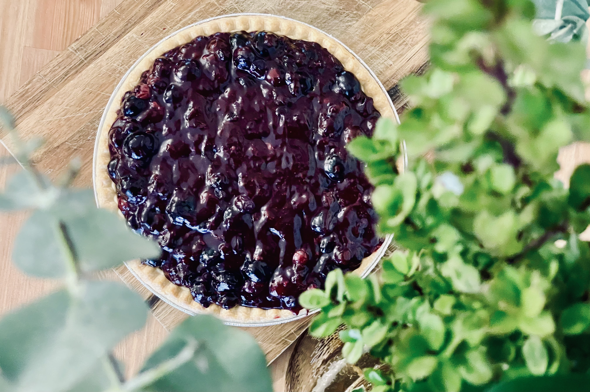

Blueberry pie recipe

Yummy blueberry pie
This blueberry pie recipe puts that bounty of farmers market berries to proper use. All their juicy, summery goodness shines through!
Ingredients
- 1 sheet refrigerated pie crust
- 3/4 cup sugar
- 3 tablespoons cornstarch
- 1/8 teaspoon salt
- 1/4 cup cold water
- 5 cups fresh blueberries, divided
- 1 tablespoon butter
- 1 tablespoon lemon juice
Steps
- Preheat oven to 425°. On a floured surface, roll dough to fit a 9-in. pie plate. Trim and flute edge. Refrigerate 30 minutes. Line crust with a double thickness of foil. Fill with pie weights. Bake on a lower oven rack until golden brown, 20-25 minutes. Remove foil and weights; bake until bottom is golden brown, 3-6 minutes. Cool on a wire rack.
- In a saucepan over medium heat, combine sugar, cornstarch, salt and water until smooth. Add 3 cups blueberries. Bring to a boil; cook and stir for 2 minutes or until thickened and bubbly.
- Remove from the heat. Add butter, lemon juice and remaining 2 cups berries; stir until butter is melted. Cool. Pour into crust. Refrigerate until serving.